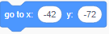
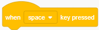
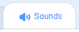
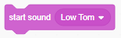
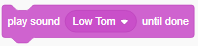
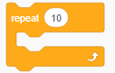
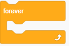
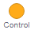
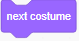
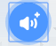

In this project, we are going to learn how to use "Sounds" to play music and record sounds!
Click Abby to see what she has to say!
Press "m" button on the keyboard to play the drum.
Press "g" button on the keyboard to play the guitar.
1) Set up the stage, set up background and add drum as a sprite.
When is clicked, Use  to put the drum into the place you want it to be.
2)Use Event , click the arrow, change "space" key to "m".
When "m" key is pressed, go to "Sounds", 
As you can see under , there is already some sounds related to the musical instrument sprits added into the sounds category.(Note to teacher: explain more here).
Lets play a drum sound by using 
3) Can you tell the difference between these two blocks? vs 
(Note to teachers: click each drum)which one uses "start sound" and which one uses "play sound until done"?
4) Add a music sprite to the project, play a sequence of sounds, press "g" to start playing music on the keyboard.
5) Let's use "Repeat"  under "Control" category, to keep the guitar playing for "x" number of times.
Can you tell the difference between these two blocks? vs 
6) This step we will create a background music that keeps playing.
By using under 
Click on backdrop and we will put our code there.
7) Animate guitar! The way to animate the sprits is to switch between costumes.
In this example, we have two costumes for the guitar. Use  after each note is played.
8) Record sounds.
Click on Abby to see what she has to say!
Recording your sound by click 
After recording, give a name to the sound track you just recorded.
8) Bonus Steps
Create a beatbox song for abby.